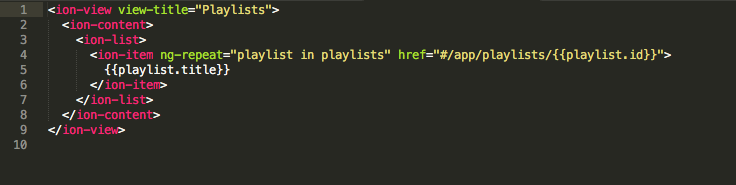
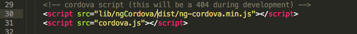

First, let's change a couple things about the myweather.html view so that we can tell when our geolocation request success. Currently, the view's code should look like this:

We're going to be serving up weather, not playlists, to our users, so you'll need to change a couple of things. First, change the view-title from "Playlists" to "My Weather". If you refresh your browser preview of the app, you should see that the title of the default page now says "My Weather". You do need to keep the ion-content tags, but you can delete both ion-list and ion-item. Let's add a quick greeting - we'll fill in the code that will actually display the user's location, later.
In order to use geolocation with Ionic, we need to install the Cordova Geolocation plugin. This can be done with the following command:
This will install the plugin; if you open up the plugins folder under your how_to directory, you should now see a cordova-plugin-geolocation folder.
Next, we need to install ngCordova for the project. You can use bower to install it with the command bower install ngCordova, or download the extensions directly and yank the ng-cordova.min.js file within the zip file. If you choose the first option, then the file will be located at www/lib/ngCordova/dist/ng-cordova.min.js. If you choose the second option, you can put your code in the www/js folder. In order to make ngCordova accessible by the app, we also need to edit the index.html file by inserting a new script tag on the line before the line that holds the cordova.js script tag.

Now we need to head back into our controller.js file. Here, we're going to pass in another variable after the $scope variable in the function parameters on line 3: $cordovaGeolocation. This will allow us to use the functionality of the Cordova plugin inside our controller.
To start off, we need to set the position options that we're going to be passing into the call to getting the user's position. We don't want the attempt to collect the geolocation of the user to tie up their device indefinitely, so we're going to set a timeout option. Additionally, because we'd like to load the position quickly to prevent the user from waiting for the dynamic content to appear on their screen, we're going to set the boolean value of enableHighAccuracy to false. If we cared more about having a very accurate position, at the expense of load time, we could instead set it to true.
Following that, we're going to invoke the $cordovaGeolocation variable and call the getCurrentPosition function built into the plugin while passing in the position options we just defined above.
The getCurrentPosition function returns a JavaScript Promise, which allows for the call to retrieve the latitude and longitude to resolve asynchronously as the rest of the controller's functions (in this case, nothing, but not in all cases) to continue to execute as the app waits for the location to be provided. Because we need to have that Promise resolved before we can do anything with the returned coordinates, we're going to append a .then function to execute once the initial Promise is returned.
Remembering from earlier that we use the $scope variable to make a variable in the controller available in the view, the second and third lines of the above code set $scope-level variables that hold the returned latitude and longitude. We want those values to be translated into something more human-readable, but we can confirm the success of the geolocation by assigning the returned latitude and longitude to $scope.lat and $scope.long and then logging them to the console. I'm writing this from Vancouver, Washington, so my console output returns the following coordinates:
As nifty as that is, those coordinates aren't very human-readable, so the next section will walk through setting up a factory to call reverse geolocation on the OpenStreetmaps API.